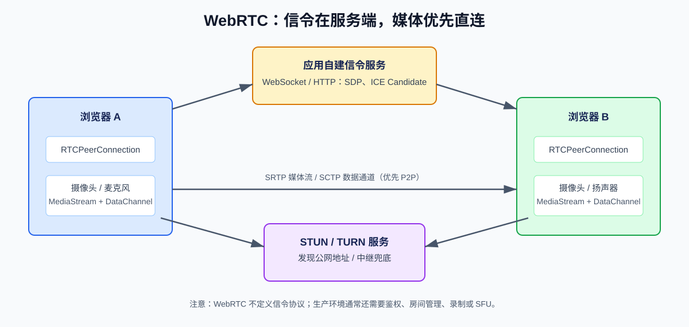
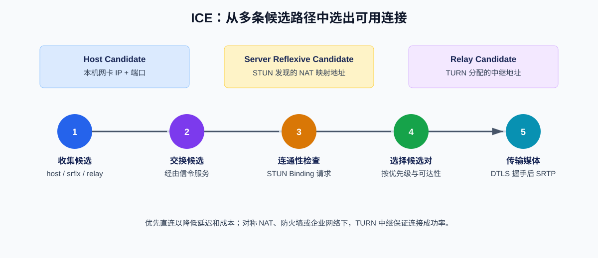
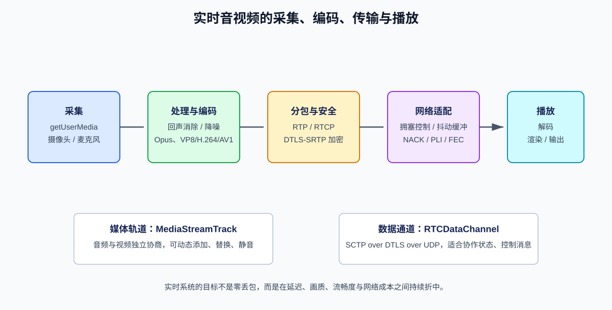
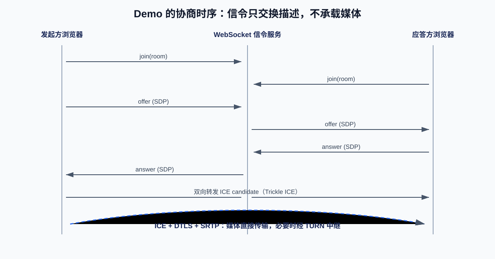

WebRTC 底层工作原理详解
WebRTC（Web Real-Time Communication）是一组开放的实时通信标准与浏览器 API。它让网页、移动端和原生应用可以在较低延迟下传输音频、视频和任意二进制数据，并把设备采集、网络穿透、加密传输、拥塞控制等复杂工作交给运行时实现。
一、先建立全局认识
1.1 什么是 WebRTC
WebRTC 不是一个“视频聊天服务器”，也不是一个单独的 JavaScript 库。它由浏览器、操作系统和网络协议共同实现，向应用暴露一组 API：
getUserMedia()：请求摄像头、麦克风、屏幕等媒体输入。RTCPeerConnection：协商两个端点的能力，建立和维护音视频连接。RTCDataChannel：在端点间发送可靠或不可靠的数据消息。MediaStream/MediaStreamTrack：表示一组媒体流及其中的音频、视频轨道。
浏览器实现中通常集成了编解码器、回声消除、自动增益、降噪、网络抖动缓冲、拥塞控制及 DTLS/SRTP 加密。应用开发者不必从 UDP 包开始实现实时通信，却仍可获取统计数据并控制媒体轨道、码率和连接状态。

1.2 它主要解决什么问题
传统 Web 应用擅长“请求后得到响应”，例如加载页面、提交表单或下载文件。实时音视频则有不同约束：
- 端到端延迟敏感：对话通常希望端到端延迟控制在数百毫秒内；积压后再可靠重传，可能比丢掉旧帧更糟。
- 网络环境复杂：家庭路由器、企业防火墙和移动网络中的 NAT 往往阻止外部主机直接访问设备。
- 网络质量持续变化：带宽、抖动、丢包率可在数秒内突变，编码器必须随之调整。
- 媒体处理成本高：回声消除、降噪、编码、解码及音画同步都需要成熟实现。
- 安全要求高：摄像头和麦克风访问必须经用户授权；媒体流在网络上必须加密。
WebRTC 将这些共性能力标准化，使应用可以关注房间、成员、权限、业务状态和产品交互。
1.3 WebRTC 不解决什么
WebRTC 也有清晰边界：
- 不定义信令协议：SDP 与 ICE Candidate 如何在双方间转发，由应用自行选择 WebSocket、HTTP、Socket.IO、MQTT 等实现。
- 不替代业务后端：鉴权、房间管理、权限控制、消息持久化、计费和审核仍需应用服务器。
- 不保证总能 P2P 直连：受限网络中需要 TURN 中继服务器。
- 不天然适合大型直播分发：多人场景常需 SFU 转发服务器；面向海量观众的直播一般使用 CDN 和 HLS/DASH/LL-HLS 等分发体系。
二、使用场景、领域与系统位置
2.1 典型场景
| 场景 | WebRTC 承担的能力 | 为什么合适 |
|---|---|---|
| 一对一或多人会议 | 摄像头、麦克风、屏幕共享 | 低延迟互动，浏览器直接加入 |
| 在线教育 | 师生连麦、白板同步、屏幕共享 | 音视频与 DataChannel 协作数据并行 |
| 在线问诊 | 医患音视频、候诊状态 | 支持端到端加密传输链路和设备授权 |
| 客服坐席 | 用户与坐席通话、网页嵌入 | 减少插件安装与电话网络依赖 |
| 云游戏与远程桌面 | 控制消息、屏幕视频、音频回传 | 可将交互延迟压得较低 |
| 物联网监控 | 设备或网关实时视频 | 适合小规模、强交互预览 |
| 协同编辑和多人游戏 | RTCDataChannel |
可选有序、无序、可靠或部分可靠传输 |
2.2 在系统中的位置
以多人会议为例，WebRTC 位于客户端实时媒体层和媒体基础设施层之间：
浏览器 / 移动 App
├─ 业务 UI：会议、成员、聊天、权限
├─ WebRTC：采集、编码、传输、解码、播放
└─ WebSocket：信令、房间状态、控制命令
│
应用后端：鉴权、房间、令牌、业务事件
│
媒体基础设施：STUN / TURN / SFU / 录制 / 转码 / 质量监控
一对一时媒体尽量点对点传输。多人会议中，每个客户端若向所有其他客户端分别上行一份流，上传带宽会快速耗尽。因此生产系统通常使用 SFU（Selective Forwarding Unit，选择性转发单元）：客户端只上行一路或多路流，SFU 按订阅关系转发给其他成员。SFU 通常不解码媒体，延迟和算力成本比 MCU 更低。
| 模式 | 链路 | 适用规模 | 主要取舍 |
|---|---|---|---|
| P2P | 客户端直连 | 1 对 1，小规模 | 成本低；穿透失败需要 TURN |
| Mesh | 每人连每人 | 2 至 4 人左右 | 简单；带宽随人数快速增长 |
| SFU | 客户端 <-> 转发服务器 | 会议、课堂、互动直播 | 主流方案；需部署媒体服务器 |
| MCU | 客户端 <-> 混流服务器 | 兼容性或合成画面需求 | 下行简单；服务器转码开销高 |
三、核心协议和连接建立
3.1 信令：让两个陌生端点交换“连接说明书”
建立 WebRTC 连接前，两端需要交换：
- Offer SDP：发起方支持的音视频编解码器、媒体方向、传输参数等描述。
- Answer SDP：应答方基于自身能力生成的回应。
- ICE Candidate：本端可用于通信的地址与端口候选。
这些内容不应该被理解为媒体数据。它们只用于建立连接，通常通过已有的 WebSocket 长连接转发。信令服务只需可靠地把消息路由给正确房间中的正确用户。
3.2 SDP：会话能力描述
SDP（Session Description Protocol）是文本格式的会话描述。例如它会包含 m=audio、m=video 媒体行，所支持的编解码器（Opus、VP8、H.264、AV1 等）、RTP Payload Type、ICE 参数与 DTLS 指纹。
现代浏览器通常通过“统一计划”（Unified Plan）按轨道协商。实际开发中应使用浏览器生成的 SDP，不应手工拼接 SDP；只有在对接特殊网关或排障时才分析其细节。
3.3 ICE、STUN 与 TURN：跨越 NAT
ICE（Interactive Connectivity Establishment）负责收集候选路径并进行连通性检查。它会优先寻找直连路径，失败时回退到中继：

候选类型如下：
| 候选 | 来源 | 特征 |
|---|---|---|
host |
本机网络接口 | 局域网内常可直接使用 |
srflx |
STUN 服务返回的公网映射 | 可帮助 NAT 后设备发现对外地址 |
relay |
TURN 服务分配 | 通过服务器中继，成功率最高但有带宽成本 |
- STUN：回答“服务器看到我的公网 IP 和端口是什么”。它不转发媒体，成本较低。
- TURN：当双方无法直连时，转发媒体数据。生产环境必须部署 TURN，才能获得稳定连接成功率。
ICE 连通性检查底层使用 STUN Binding 请求。双方会尝试候选对，并根据优先级与连通性选出可用路径。候选可在 SDP 生成后持续收集和交换，这叫 Trickle ICE，能缩短首帧时间。
3.4 DTLS、SRTP 与 SCTP：安全传输
WebRTC 强制保护通信内容：
- DTLS：在 UDP 上完成握手与密钥协商，并用 SDP 中的指纹校验对端身份。
- SRTP / SRTCP：承载加密后的 RTP 媒体数据与 RTCP 控制反馈。
- SCTP over DTLS over UDP：
RTCDataChannel的常见传输栈，支持多路数据流和部分可靠传输。
媒体内容默认不会明文通过网络。需要注意的是：常规 SFU 能解密并转发媒体；若要让 SFU 也无法看到内容，需采用 Insertable Streams 实现端到端加密（E2EE），这会增加密钥管理、录制与服务端处理的复杂度。
四、音视频如何在低延迟下传输
4.1 从采集到播放

一条视频轨道大致经历：
- 浏览器向用户请求摄像头或屏幕权限，获得
MediaStreamTrack。 - 前处理模块执行回声消除、自动增益控制和噪声抑制等操作。
- 编码器使用协商后的编码格式压缩帧。
- RTP 将编码数据切为网络包，DTLS-SRTP 加密后通过选定的 ICE 路径发送。
- 接收端根据序列号、时间戳与 RTCP 反馈处理乱序、丢包和抖动。
- 解码器还原媒体帧，浏览器同步后渲染到
<video>或输出到扬声器。
4.2 RTP、RTCP 和拥塞控制
- RTP：承载音频、视频包，包含序列号、时间戳、SSRC 等信息。
- RTCP：反馈接收质量，如丢包、往返时延、抖动、关键帧请求（PLI/FIR）等。
- 拥塞控制：发送端依据反馈动态调整可用码率、帧率、分辨率和层级，避免持续塞满网络。
实时通信的原则不是“绝不丢包”。对过期视频帧进行重传可能增加延迟，因此 WebRTC 会在可靠性、清晰度和实时性之间权衡。音频通常更重视连续性；视频可降帧、降分辨率或请求关键帧。
4.3 Simulcast 与 SVC
多人会议中，每个人的网络条件不同：
- Simulcast：同一视频编码多个不同分辨率/码率的独立流，例如低、中、高三层，SFU 按订阅者网络选择转发。
- SVC（可伸缩视频编码）：一个编码流包含基础层和增强层，接收端按能力解出相应层。
这两项能力是大规模会议中“弱网不拖垮全场”的重要基础。浏览器与 SFU 对具体编解码器、层级方式的兼容性需要实际验证。
五、浏览器 API 速览
// 采集本地音视频
const stream = await navigator.mediaDevices.getUserMedia({
audio: true,
video: { width: 1280, height: 720, frameRate: { ideal: 30 } },
});
// 创建连接，并将媒体轨道加入连接
const pc = new RTCPeerConnection({
iceServers: [{ urls: "stun:stun.example.com:3478" }],
});
for (const track of stream.getTracks()) {
pc.addTrack(track, stream);
}
// 接收远端轨道
pc.ontrack = (event) => {
remoteVideo.srcObject = event.streams[0];
};
// 创建数据通道
const channel = pc.createDataChannel("control", { ordered: true });
channel.onmessage = (event) => console.log(event.data);
浏览器只有在安全上下文（HTTPS 或 localhost）下才允许访问摄像头和麦克风。用户拒绝权限、设备不存在或设备被其他应用占用时，都应在 UI 中提供明确处理。
六、实战案例：两人浏览器视频通话
6.1 目标与目录
下面的最小 Demo 实现两人房间的视频通话。信令服务仅转发 offer、answer、candidate 消息；浏览器直接建立 WebRTC 连接。
webrtc-demo/
├─ server.mjs # WebSocket 信令服务
└─ public/
└─ index.html # 浏览器页面

6.2 信令服务：server.mjs
初始化项目并安装依赖：
npm init -y
npm install ws@8.18.0
创建如下服务。它限制每个房间最多两人，并且只转发消息，不信任客户端传来的身份字段：
import { createServer } from "node:http";
import { WebSocketServer, WebSocket } from "ws";
import { readFile } from "node:fs/promises";
import { join } from "node:path";
const publicDir = join(process.cwd(), "public");
const rooms = new Map();
const server = createServer(async (request, response) => {
if (request.url !== "/" && request.url !== "/index.html") {
response.writeHead(404).end();
return;
}
try {
const html = await readFile(join(publicDir, "index.html"));
response.writeHead(200, { "Content-Type": "text/html; charset=utf-8" });
response.end(html);
} catch {
response.writeHead(500).end("页面加载失败");
}
});
const wss = new WebSocketServer({ server });
function leaveRoom(socket) {
const room = rooms.get(socket.roomId);
if (!room) return;
room.delete(socket);
if (room.size === 0) rooms.delete(socket.roomId);
for (const peer of room) {
if (peer.readyState === WebSocket.OPEN) {
peer.send(JSON.stringify({ type: "peer-left" }));
}
}
}
function relay(socket, payload) {
const room = rooms.get(socket.roomId);
if (!room) return;
for (const peer of room) {
if (peer !== socket && peer.readyState === WebSocket.OPEN) {
peer.send(JSON.stringify(payload));
}
}
}
wss.on("connection", (socket) => {
socket.on("message", (buffer) => {
let message;
try {
message = JSON.parse(buffer.toString());
} catch {
socket.close(1008, "无效 JSON");
return;
}
if (message.type === "join") {
const roomId = String(message.roomId ?? "").trim();
if (!/^[a-zA-Z0-9_-]{1,64}$/.test(roomId)) {
socket.close(1008, "无效房间号");
return;
}
const room = rooms.get(roomId) ?? new Set();
if (room.size >= 2) {
socket.send(JSON.stringify({ type: "room-full" }));
return;
}
socket.roomId = roomId;
room.add(socket);
rooms.set(roomId, room);
socket.send(JSON.stringify({ type: "joined", initiator: room.size === 1 }));
if (room.size === 2) relay(socket, { type: "peer-ready" });
return;
}
if (!socket.roomId || !["offer", "answer", "candidate"].includes(message.type)) {
return;
}
relay(socket, message);
});
socket.on("close", () => leaveRoom(socket));
});
server.listen(3000);
生产服务应接入结构化日志、限流、鉴权和监控。示例为了聚焦信令流程，省略了日志基础设施。
6.3 客户端：public/index.html
<!doctype html>
<html lang="zh-CN">
<head>
<meta charset="utf-8">
<meta name="viewport" content="width=device-width, initial-scale=1">
<title>WebRTC 双人通话</title>
<style>
body { max-width: 960px; margin: 32px auto; font-family: system-ui, sans-serif; }
.toolbar, .videos { display: flex; gap: 12px; flex-wrap: wrap; }
input, button { padding: 8px 12px; font-size: 16px; }
video { width: min(460px, 100%); background: #111; aspect-ratio: 16 / 9; }
#status { color: #475569; }
</style>
</head>
<body>
<h1>WebRTC 双人通话</h1>
<div class="toolbar">
<input id="roomId" value="demo-room" maxlength="64" aria-label="房间号">
<button id="joinButton">加入房间</button>
<button id="hangupButton" disabled>挂断</button>
<span id="status">未连接</span>
</div>
<div class="videos">
<section><h2>本地</h2><video id="localVideo" autoplay muted playsinline></video></section>
<section><h2>远端</h2><video id="remoteVideo" autoplay playsinline></video></section>
</div>
<script>
const localVideo = document.querySelector("#localVideo");
const remoteVideo = document.querySelector("#remoteVideo");
const roomIdInput = document.querySelector("#roomId");
const joinButton = document.querySelector("#joinButton");
const hangupButton = document.querySelector("#hangupButton");
const status = document.querySelector("#status");
let socket;
let peerConnection;
let localStream;
let isInitiator = false;
let pendingCandidates = [];
const iceServers = [
// 本地同网段测试可留空；生产环境替换为自建 STUN/TURN。
{ urls: "stun:stun.l.google.com:19302" },
];
function setStatus(text) {
status.textContent = text;
}
function send(message) {
if (socket?.readyState === WebSocket.OPEN) {
socket.send(JSON.stringify(message));
}
}
async function getLocalStream() {
if (localStream) return localStream;
localStream = await navigator.mediaDevices.getUserMedia({
audio: true,
video: { width: { ideal: 1280 }, height: { ideal: 720 } },
});
localVideo.srcObject = localStream;
return localStream;
}
async function ensurePeerConnection() {
if (peerConnection) return peerConnection;
const stream = await getLocalStream();
peerConnection = new RTCPeerConnection({ iceServers });
for (const track of stream.getTracks()) {
peerConnection.addTrack(track, stream);
}
peerConnection.ontrack = ({ streams }) => {
remoteVideo.srcObject = streams[0];
};
peerConnection.onicecandidate = ({ candidate }) => {
if (candidate) send({ type: "candidate", candidate });
};
peerConnection.onconnectionstatechange = () => {
setStatus(`连接状态：${peerConnection.connectionState}`);
if (["failed", "closed"].includes(peerConnection.connectionState)) {
closePeerConnection();
}
};
return peerConnection;
}
async function createOffer() {
const pc = await ensurePeerConnection();
const offer = await pc.createOffer();
await pc.setLocalDescription(offer);
send({ type: "offer", sdp: pc.localDescription });
setStatus("已发送 Offer，等待对方加入");
}
async function addCandidate(candidate) {
if (!peerConnection?.remoteDescription) {
pendingCandidates.push(candidate);
return;
}
await peerConnection.addIceCandidate(candidate);
}
async function flushCandidates() {
for (const candidate of pendingCandidates) {
await peerConnection.addIceCandidate(candidate);
}
pendingCandidates = [];
}
async function handleSignal(message) {
if (message.type === "joined") {
isInitiator = message.initiator;
setStatus(isInitiator ? "已加入，等待对方" : "已加入，等待 Offer");
return;
}
if (message.type === "peer-ready" && isInitiator) {
await createOffer();
return;
}
if (message.type === "offer") {
const pc = await ensurePeerConnection();
await pc.setRemoteDescription(message.sdp);
await flushCandidates();
const answer = await pc.createAnswer();
await pc.setLocalDescription(answer);
send({ type: "answer", sdp: pc.localDescription });
return;
}
if (message.type === "answer") {
await peerConnection.setRemoteDescription(message.sdp);
await flushCandidates();
return;
}
if (message.type === "candidate") {
await addCandidate(message.candidate);
return;
}
if (message.type === "peer-left") {
remoteVideo.srcObject = null;
setStatus("对方已离开");
}
if (message.type === "room-full") {
setStatus("房间已满");
socket.close();
}
}
function closePeerConnection() {
peerConnection?.close();
peerConnection = undefined;
pendingCandidates = [];
remoteVideo.srcObject = null;
}
joinButton.addEventListener("click", async () => {
try {
await getLocalStream();
const roomId = roomIdInput.value.trim();
socket = new WebSocket(`ws://${location.host}`);
socket.onopen = () => send({ type: "join", roomId });
socket.onmessage = (event) => handleSignal(JSON.parse(event.data))
.catch((error) => setStatus(`信令处理失败：${error.message}`));
socket.onerror = () => setStatus("信令连接失败");
socket.onclose = () => { if (!peerConnection) setStatus("信令已断开"); };
joinButton.disabled = true;
hangupButton.disabled = false;
} catch (error) {
setStatus(`无法启用设备：${error.message}`);
}
});
hangupButton.addEventListener("click", () => {
closePeerConnection();
socket?.close();
localStream?.getTracks().forEach((track) => track.stop());
localStream = undefined;
localVideo.srcObject = null;
joinButton.disabled = false;
hangupButton.disabled = true;
setStatus("已挂断");
});
</script>
</body>
</html>
6.4 运行与验证
node server.mjs
在同一台设备的两个浏览器窗口中打开 http://localhost:3000，输入相同房间号并点击“加入房间”。第二个客户端加入后，发起方创建 Offer，双方即可开始协商。首次访问时允许浏览器使用摄像头与麦克风。
该示例适合学习连接流程。跨公网测试时，公共 STUN 只用于演示，不能保证可用；应配置受控的 TURN 服务，并把页面和 WebSocket 升级为 HTTPS/WSS。
七、生产落地清单
7.1 网络和安全
- 使用 HTTPS 与 WSS，配置受信任证书。
- 部署 STUN/TURN，TURN 使用短期凭据（如 time-limited HMAC credentials），不要把长期密码写入前端。
- 限制 TURN 的可用端口范围和中继带宽，配合防火墙、配额和监控。
- 在信令连接建立前验证用户身份和房间权限；校验所有信令消息大小、类型与速率。
- 对录制、转写和媒体留存明确告知并符合隐私与合规要求。
7.2 质量监控
通过 RTCPeerConnection.getStats() 定期采集下列指标：
| 指标 | 意义 | 常见处理 |
|---|---|---|
packetsLost / 丢包率 |
网络是否拥塞或不稳定 | 降码率、启用更低层流 |
jitter |
到包时间波动 | 观察弱网、调整缓冲策略 |
roundTripTime |
往返时延 | 就近部署 TURN/SFU |
framesPerSecond |
实际渲染或编码帧率 | 降分辨率、检查 CPU |
availableOutgoingBitrate |
可用上行带宽估计 | 调整发送编码参数 |
candidate-pair 类型 |
是否走 TURN 中继 | 分析 NAT 穿透成功率与成本 |
不要只用“是否接通”衡量体验。首帧耗时、音频卡顿率、视频冻结率、重连成功率、TURN 使用率和不同地区的网络质量都应进入可观测体系。
八、未来发展趋势
- AV1 与硬件编码普及：在同等画质下更节省带宽，但设备硬件能力与兼容性仍决定实际策略。
- 端到端加密能力增强：Insertable Streams 让会议产品能够在 SFU 架构中提供更强的内容保密性。
- WebCodecs、WebTransport 协同：WebCodecs 提供更细的编解码控制；WebTransport 适合需要自定义传输语义的低延迟应用。它们扩展 WebRTC 的能力边界，而非简单替代。
- 面向 AI 的实时媒体处理：实时字幕、语音识别、虚拟背景、智能降噪、翻译与会议纪要会更多嵌入媒体链路，但需谨慎处理延迟、隐私和算力成本。
- 更成熟的大规模媒体基础设施：SFU 的自适应转发、多区域调度、录制、转写和质量分析会成为标准能力；客户端仍以 WebRTC 承担最后一公里实时交互。
九、总结
WebRTC 的核心价值是把实时媒体最难的通用问题标准化：浏览器负责采集、编码、抗弱网、安全传输与播放；应用负责信令、身份、房间和业务规则；STUN/TURN 解决可达性，SFU 解决多人扩展。
理解 WebRTC 时，始终抓住这条主线：
信令交换 Offer / Answer / Candidate
↓
ICE 选择直连或 TURN 中继路径
↓
DTLS 建立密钥，SRTP 加密 RTP 媒体
↓
RTCP 反馈网络状态，编码器持续自适应